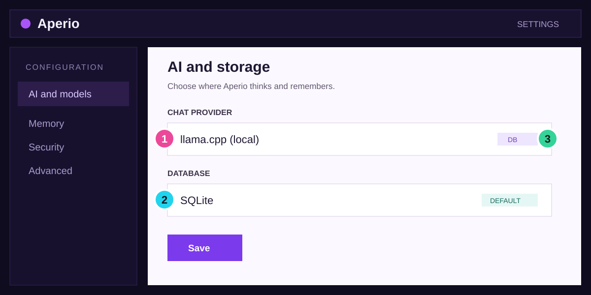
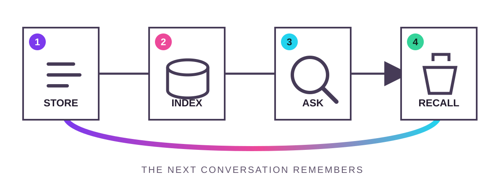

Owner manual / release 0.68
Make recall part of the path
Aperio gives every agent one durable, self-hosted memory. This manual gets you from first launch to verified recall, then stays beside you for operation, recovery, and contribution.

01
10 minute fast path
Store one memory.
Recall it later.
This path proves the whole loop before you tune anything. You are done when a fresh conversation retrieves a detail that was not copied into its prompt.
Success / finish line. A second conversation recalls the marina gate code after the first conversation has ended.
1. Keep the first setup local
Create .env with the smallest useful configuration:
AI_PROVIDER=llamacpp
DB_BACKEND=sqlite
EMBEDDING_PROVIDER=transformersStart Aperio
Run the normal start command and wait for the connected state.
npm start
Connect an agent
Add Aperio as an MCP server, then confirm its memory tools are visible.
Prove recall
Store a harmless fact, end the chat, and ask a fresh chat for it.
Caution / keep secrets off the air. Test with a harmless fact. Do not store passwords, API keys, or recovery codes as a recall check.
02
One task, labeled differences
Put the configuration
where Aperio reads it
The decision is shared across platforms; only the file path and service controls differ.
macOS Apple silicon and Intel
Use the project .env, then allow Keychain access if
database encryption is enabled.
cp .env.example .env
Windows PowerShell
Use the same project file. Keep UTF-8 encoding and avoid a hidden
.txt suffix.
Copy-Item .env.example .env
Linux Desktop or server
Use the project file for an interactive install or the service environment for a daemon.
cp .env.example .env

-
1
Provider. Choose where chat inference runs.
-
2
Storage. SQLite is the zero-configuration default.
-
3
Source badge. Confirm whether the value came from DB, environment, or default.
03
Understand enough to recover
Follow a memory through
the receiver
Every layer has one job and one piece of evidence. Trace the signal in order; do not change thresholds until you know which layer failed.

| Layer | Owns | Evidence when healthy | First recovery move |
|---|---|---|---|
| Agent | Tool request and useful context | Memory tool returns a stable ID | Confirm the MCP connection |
| Aperio | Validation and durable write | Record exists with expected scope | Search a distinctive phrase |
| Embedder | Searchable vector representation | Queue reaches completed state | Inspect provider and queue state |
| Recall | Ranking and context delivery | Relevant memory enters the next turn | Compare exact and semantic search |
Aperio says
Trace before tuning. If exact search works but semantic recall does not, the useful evidence is between storage and embedding - not in the ranking threshold.
Troubleshooting by symptom
No tools appear
Check the MCP connection
and server command.
Exact search is empty
Check write
acceptance, scope, and database state.
Semantic recall is empty
Check the
embedding provider and queue.